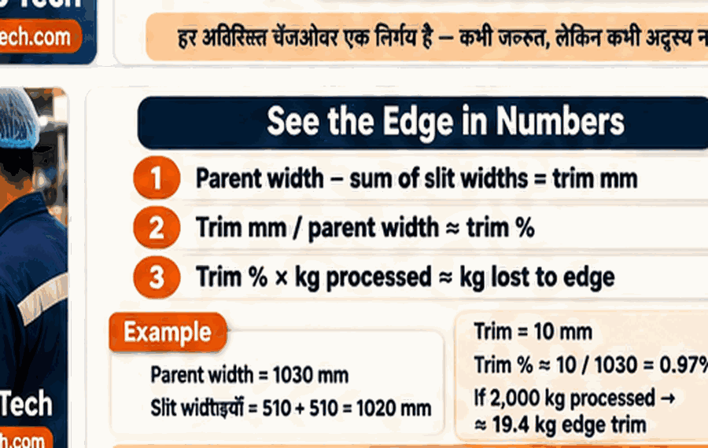
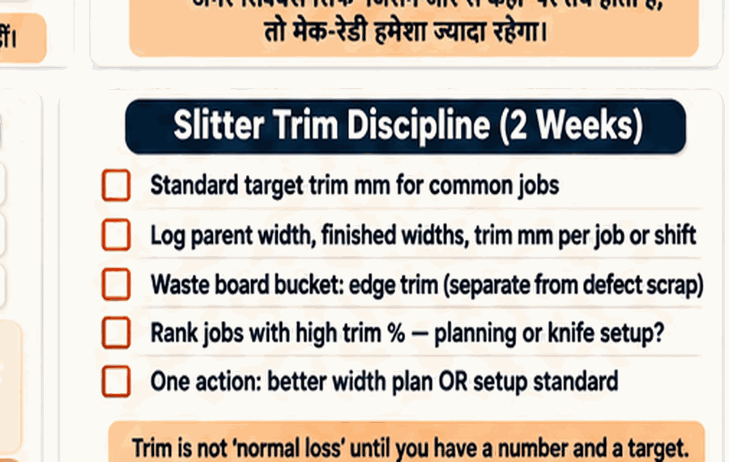
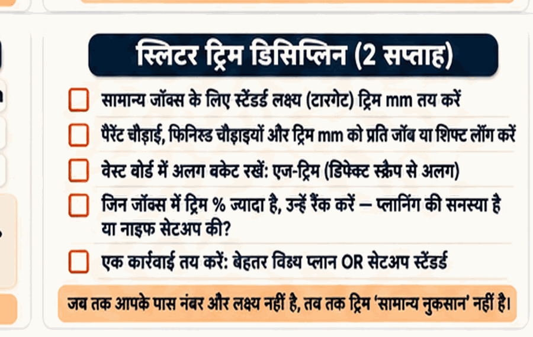

✂️ Edge-Trim Waste Discipline on the Slitter
📖 8-min read | Plant Operations | Practical, numbers-first
Defect scrap gets arguments. Edge trim often gets a shrug — “that’s normal.”
Every shift, millimetres on each side become kilograms. If trim is not on the waste board (Blog 108), it will not get a target, a plan, or a weekly action.
See the Edge in Numbers

- Trim mm ≈ parent width − sum of finished slit widths (account for your plant’s lane rules)
- Trim % ≈ trim mm ÷ parent width
- Trim kg ≈ trim % × kg processed (good enough for shift discipline)
Exact metrology can come later. First make the edge visible on one machine for two weeks.
What Drives High Trim
- Parent roll not matched to the order width mix (planning — Blog 113)
- Knife setup “safe” margins that grew over time with no standard
- Rework slits that force awkward patterns
- No target mm, so every operator uses a personal comfort zone
Slitter Trim Discipline (2 Weeks)

- Pick the busiest slitter (or the one with the most “mystery” waste).
- Post a target trim mm for common job types (one line is enough).
- Log parent width, finished widths, trim mm — per job or per shift total.
- Add an edge trim bucket on the daily waste board (separate from defect scrap).
- Week 2: rank high trim % jobs — fix plan (better parent/width mix) or setup (standard mm).
- One action only; re-measure.
Link to Sequence and Waste Board
113 Job sequence — width chaos upstream becomes trim kg downstream.
108 Waste board — trim needs its own bucket or it stays inside “other.”
109 Incoming checks — wrong parent width at the gate is a planning miss, not a slitter skill issue.
Key Takeaway
✂️ स्लिटर पर एज-ट्रिम वेस्ट डिसिप्लिन
📖 9-min read | प्लांट ऑपरेशन्स
डिफेक्ट स्क्रैप पर बहस होती है। एज ट्रिम पर अक्सर कंधे उचकते हैं — “यही तो नॉर्मल है।”
